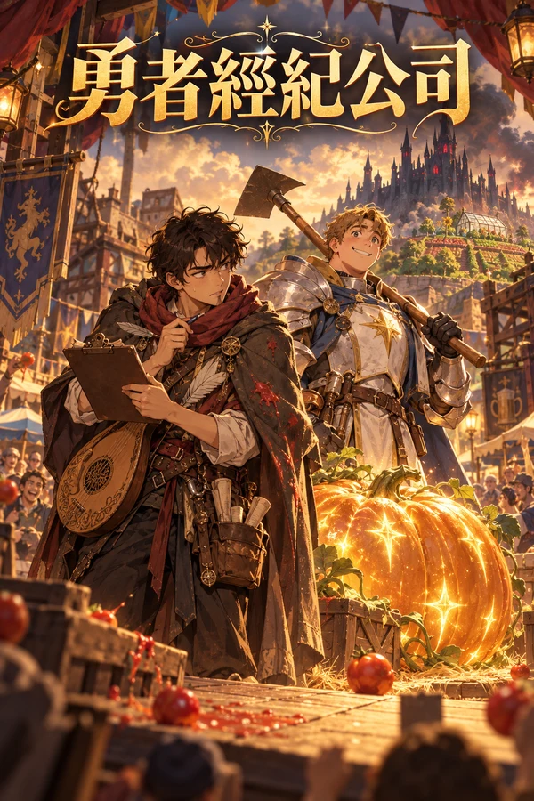

穿成反派後，我成了主角的人生導師算了小說穿成反派後，我成了主角的人生導師仙俠穿書輕喜劇連載中本該害人，卻被迫教菜雞主角做人；教得越好，主線越歪。穿書反派沈硯只想活過第87章，計劃卻一個接一個被自己的好課表搞廢。開始閱讀
勇者經紀公司算了小說勇者經紀公司西方玄幻搞笑連載中嗓子被一顆番茄砸啞的吟遊詩人傑克，改行開了勇者經紀公司。在這個人氣就是戰力、人設一崩就掉粉變弱的世界，他簽下的第一個藝人，是只想種田、拿聖光催肥南瓜的聖騎士托比。田園系勇者，出道！開始閱讀
過氣主播導遊算了小說過氣主播導遊都市職業喜劇完結前國服第一打野「飛皇」過氣欠債，揣著導遊證改行帶團。走位、開團、讀秒，他把電競解說那套搬上遊覽車；可榜一大哥第一個團就扛著橫幅來捧場，而他最怕的，就是被團客認出來。開始閱讀
直播帶貨帶出了修仙算了小說直播帶貨帶出了修仙都市異能喜劇連載中欠債四萬的小主播陸平安，花十五塊買了一盞補光燈。燈亮著的時候，他在直播間說的話，賣出去就成真；可每賣一單，代價都會反過來找上他自己。開始閱讀